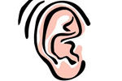
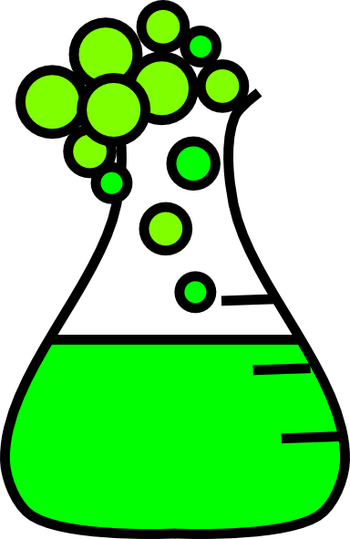

Echoes
Hear that? By the time you did it was in the past. The speed of sound traveling in dry, 68 ℉ air is 767 miles per hour. The sounds you're hearing actually occured milliseconds ago and you are listening to the reverberations of the original impact. Your brain makes the sounds appear to sync up to the visual action around you. But dont' be fooled. Everything you hear is a blast from the past.

The Unseen
I am old. My parents are older than me. Some people are even older than my parents. I have never met someone who notices themselves aging. Purely anecdotal evidence here: I always ask old people if they feel "old" and they all say that even though they know that they are old, they don't realize it unless they can no longer do physical things they used to enjoy doing. You are getting old and soon you'll die.
Reaction
The average lifespan for humans is 79 years. If you're in your late twenties, you have already used up one-third of your life. And it could all end today, tomorrow, any time. You are lucky to have made it this far. Some people are born dead. Just remember that you are simply a collection of atoms and everything that exists is a chemical reaction that is surely headed toward atomic neutrality. Use your time wisely before you are neutralized.
